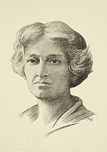

Bertha M. Sprinks Goudy
American, 1869-1935
Bertha Goudy was a bookkeeper when she married a fellow bookkeeper,
Frederic William Goudy (1865-1947), in 1897. Fred Goudy would later
become arguably the most admired and well-known of American twentieth-century
type designers. The posthumous tributes which appeared in Bookmaking
on the Distaff Side (1937), and Bertha S. Goudy, First Lady
of Printing (1958) make it clear, however, that her contributions were of the
greatest significance to their joint enterprises. Bertha herself,
for example,
cut their 24-point Deepdene italic design, and set the type for much
of the output of the Village Press, which they founded together with
Will Ransom, in 1903. Printing, an Essay by William Morris & Emery
Walker, was their first publication, and their designs continue Morris’s
revival of fine craftsmanship in the book arts.
Fred Goudy's own touching tribute to his wife reveals her
importance to him and to their work:
To me she was "my beloved helpmate." She encouraged
me when my own courage faltered; uncomplaining she endured the
privations and vicissitudes of our early companionship; her intelligent
and
ready
counsel I welcomed and valued; her consummate craftsmanship made
possible many difficult undertakings. She ever sought to minimize
any exploitation
of her great attainments, that the acclaim which rightfully belonged
to her should come, instead, to me. For two-score years she unselfishly
aided me in every way in my work in the fields of type design and
typography, and enabled me to secure a measure of success which
alone could never
have been mine.
A Specimen of the Village & Other Types Cast at the Village
Letter Foundery [sic], Marlborough-on-Hudson, N.Y., by Fred & Bertha
Goudy.” Typographica, Number 5, Summer 1927.
Graphic Arts Division

Portrait of Bertha Goudy, by Mae Bradford Dunning, ca.
1910
Graphic Arts Division
Other works in the exhibition:
- The Door in the Wall and Other Stories, by H. G. Wells,
illustrated with photogravures from photographs by Alvin Langdon
Coburn.
New York and London: Mitchell Kennerley, 1911.
Graphic Arts Division
While The Door in the Wall is
justly famous on three counts: stories by H. G. Wells, photographs
by Alvin Langdon Coburn,
and
type designed
especially for it by Fred Goudy (his Kennerly, named for
the publisher), the high quality of Bertha Goudy’s typesetting
also deserves recognition.
- Bertha S. Goudy, First Lady of Printing: Remembrances of
the Distaff Side of the Village Press. Tributes by Bruce Rogers,
Mabel H. Dwiggins, Alice Goudy Lochhead, Paul A. Bennett,
George Macy,
and F. W. Goudy
The Distaff Side, 1958.
Rare Books Division, the Miriam Y. Holden Collection
on the History of Women